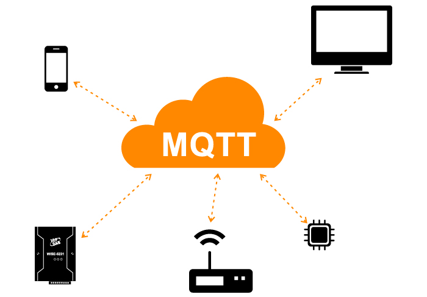
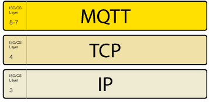
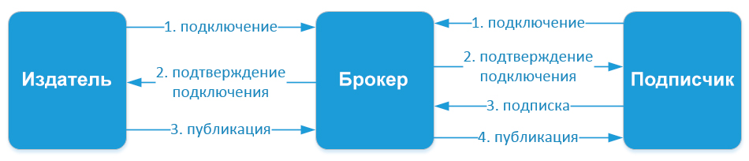
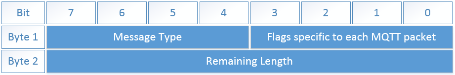
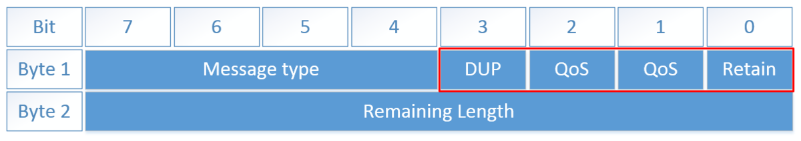
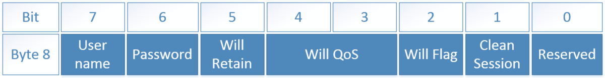
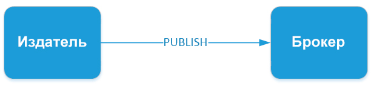
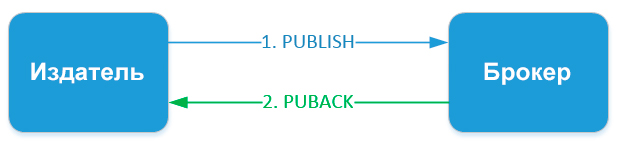
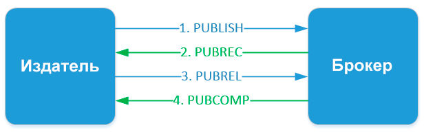

Просто о протоколе MQTT в IIoT.

Оглавление:
С развитием промышленности увеличивается количество устройств, которые нужно контролировать и получать от них различные данные. Для решения проблем взаимодействия большого количества устройств и проблем объединения устройств в одну сеть была создана концепция Интернета вещей (англ. Internet of Things, IoT) – это когда устройства объединяются по какому-то признаку в одну сеть, потом уже несколько подобных сетей объединяются в другую большую сеть и так далее.
Устройства в таких сетях взаимодействуют друг с другом по средствам различных интерфейсов и протоколов передачи данных. Так как мы говорим о промышленном применении концепции IoT, в которой должны использоваться промышленное оборудование со своими протоколами и аппаратными средствами, то мы переходим к концепции IIoT (Промышленного Интернета вещей).
Для взаимодействия между собой устройства используют различные промышленные протоколы, одним из популярных протоколов для этой цели является MQTT.
MQTT или Message Queue Telemetry Transport – это легкий, компактный и открытый протокол обмена данными созданный для передачи данных на удалённых локациях, где требуется небольшой размер кода и есть ограничения по пропускной способности канала. Вышеперечисленные достоинства позволяют применять его в системах M2M (Машинно-Машинное взаимодействие) и IIoT (Промышленный Интернет вещей).
Также существует версия протокола MQTT-SN (MQTT for Sensor Networks), ранее известная как MQTT-S, которая предназначена для встраиваемых беспроводных устройств без поддержки TCP/IP сетей, например, Zigbee.
Основные особенности протокола MQTT:
Протокол MQTT работает на прикладном уровне поверх TCP/IP и использует по умолчанию 1883 порт (8883 при подключении через SSL).

Обмен сообщениями в протоколе MQTT осуществляется между клиентом (client), который может быть издателем или подписчиком (publisher/subscriber) сообщений, и брокером (broker) сообщений (например, Mosquitto MQTT).
Издатель отправляет данные на MQTT брокер, указывая в сообщении определенную тему, топик (topic). Подписчики могут получать разные данные от множества издателей в зависимости от подписки на соответствующие топики.
Устройства MQTT используют определенные типы сообщений для взаимодействия с брокером, ниже представлены основные:

Схема простого взаимодействия между подписчиком, издателем и брокером
Топики представляют собой символы с кодировкой UTF-8. Иерархическая структура топиков имеет формат «дерева», что упрощает их организацию и доступ к данным. Топики состоят из одного или нескольких уровней, которые разделены между собой символом «/».
Пример топика в который датчик температуры, расположенный в спальной комнате публикует данные брокеру:
/home/living-space/living-room1/temperature
Подписчик может так же получать данные сразу с нескольких топиков, для этого существуют wildcard. Они бывают двух типов: одноуровневые и многоуровневые. Для более простого понимания рассмотрим в примерах каждый из них:
MQTT сообщение состоит из нескольких частей:

Фиксированный заголовок MQTT-сообщения
Message Type – это тип сообщения, например: CONNECT, SUBSCRIBE, PUBLISH и другие.
Flags specific to each MQTT packet – эти 4 бита отведены под вспомогательные флаги, наличие и состояние которых зависит от типа сообщения.
Remaining Length – представляет длину текущего сообщения(переменный заголовок + данные), может занимать от 1 до 4 байта.
Всего в протоколе MQTT существует 15 типов сообщений:
*К – клиент, **С – сервер
Флаги
Четыре старших бита первого байта фиксированного заголовка отведены под специальные флаги:

DUP – флаг дубликата устанавливается, когда клиент или MQTT брокер совершает повторную отправку пакета (используется в типах PUBLISH, SUBSCRIBE, UNSUBSCRIBE, PUBREL). При установленном флаге переменный заголовок должен содержать Message ID (идентификатор сообщения)
QoS – качество обслуживания (0,1,2)
RETAIN – при публикации данных с установленным флагом retain, брокер сохранит его. При следующей подписке на этот топик брокер незамедлительно отправит сообщение с этим флагом. Используется только в сообщениях с типом PUBLISH.
Переменный заголовок содержится в некоторых заголовках.
В нём помещаются следующие данные:

User name – при наличии этого флага в «нагрузке» должно быть указано имя пользователя (используется для аутентификации клиента)
Password – при наличии этого флага в «нагрузке» должен быть указан пароль (используется для аутентификации клиента)
Will Retain – при установке в 1, брокер хранит у себя Will Message.
Will QoS– качество обслуживания для Will Message, при установленном флаге Will Flag, Will QoS и Will retain являются обязательными.
Will Flag - при установленном флаге, после того, как клиент отключится от брокера без отправки команды DISCONNECT(в случаях непредсказуемого обрыва связи и т.д.), брокер оповестит об этом всех подключенных к нему клиентов через так называемый Will Message.
Clean Session – очистить сессию. При установленном «0» брокер сохранит сессию, все подписки клиента, а так же передаст ему все сообщения с QoS1 и QoS2, которые были получены брокером во время отключения клиента, при его следующем подключении. Соответственно при установленной «1», при повторном подключении клиенту будет необходимо заново подписываться на топики.
Содержание и формат данных, передаваемых в MQTT сообщениях, определяются в приложении. Размер данных может быть вычислен путём вычитания из Remaining Length длины переменного заголовка.
Качество обслуживания в протоколе MQTT (QoS)
MQTT поддерживает три уровня качества обслуживания (QoS) при передаче сообщений.
QoS 0 At most once. На этом уровне издатель один раз отправляет сообщение брокеру и не ждет подтверждения от него, то есть "отправил и забыл":

QoS 1 At least once. Этот уровень гарантирует, что сообщение точно будет доставлено брокеру, но есть вероятность дублирования сообщений от издателя. После получения дубликата сообщения, брокер снова рассылает это сообщение подписчикам, а издателю снова отправляет подтверждение о получении сообщения. Если издатель не получил PUBACK сообщения от брокера, он повторно отправляет этот пакет, при этом в DUP устанавливается «1».

QoS 2 Exactly once. На этом уровне гарантируется доставка сообщений подписчику и исключается возможное дублирование отправленных сообщений.

Издатель отправляет сообщение брокеру. В этом сообщении указывается уникальный Packet ID, QoS=2 и DUP=0. Издатель хранит сообщение неподтвержденным пока не получит от брокера ответ PUBREC. Брокер отвечает сообщением PUBREC в котором содержится тот же Packet ID. После его получения издатель отправляет PUBREL с тем же Packet ID. До того, как брокер получит PUBREL он должен хранить копию сообщения у себя. После получения PUBREL он удаляет копию сообщения и отправляет издателю сообщение PUBCOMP о том, что транзакция завершена.
Для обеспечения безопасности в MQTT протоколе реализованы следующие методы защиты:
Оборудование для IIoT с поддержкой MQTT
Для построения систем промышленного интернета вещей, а также интегрирования существующего оборудования в облачные системы используются специальные устройства.